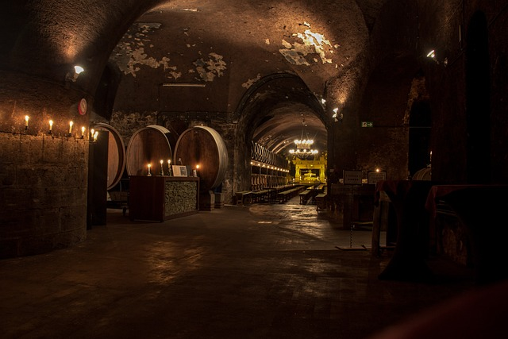

HISTORY TIPS
수 천 년 동안 인류에게 사랑받아온 술, 와인

와인의 탄생을 찾아서
와인의 역사는 적어도 수천 년 동안 거슬러 올라갑니다.고대 시대부터 그리스, 이탈리아, 프랑스, 스페인 등
유럽 지역에서 생산되고 소비되어 왔습니다.
로마 제국 시대에는 와인이 일상생활에서 중요한 역할을 했습니다.
로마인들은 와인을 신분이나 사회 계층을 나타내는 상징으로 여기기도 했습니다.
중세 시대에는 기독교의 유대성찬에서 와인이 사용되기 시작했습니다.
이후에는 수도원이나 교회 등에서 와인 생산이 이루어졌습니다.
15세기 이후, 와인 생산은 유럽에서 급격히 발전했습니다.
이탈리아, 프랑스, 스페인 등에서는 지금도 유명한 와인이 생산되고 있습니다.
현재는 전세계적으로 와인 생산이 이루어지고 있으며,
수많은 종류의 와인이 있습니다.
와인은 음식과 함께 즐기거나, 파티나 행사에서 마시는 등
여러가지 상황에서 즐길 수 있습니다.